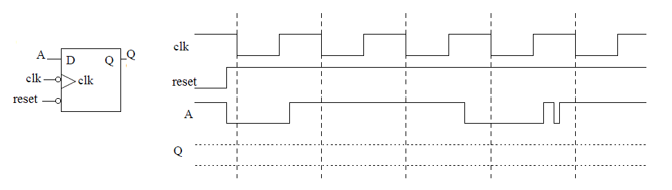
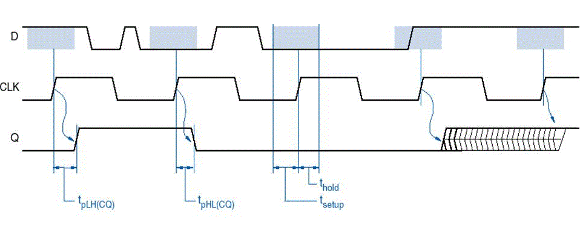
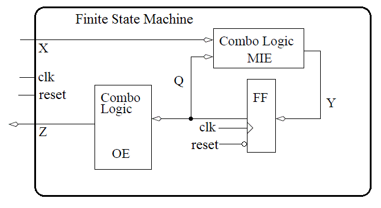
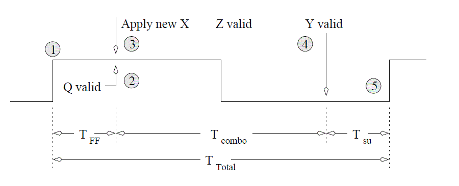
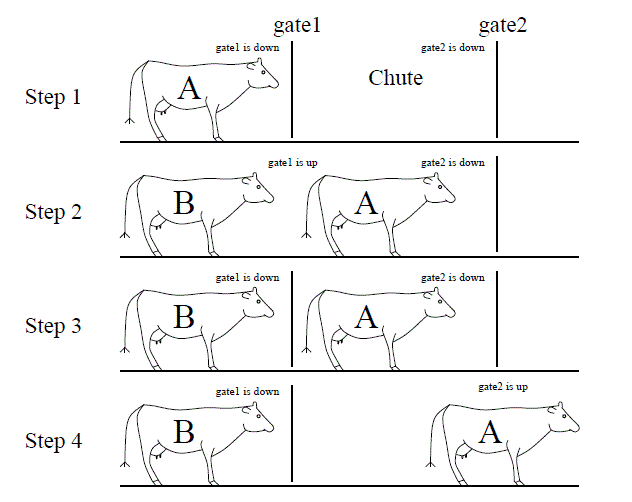
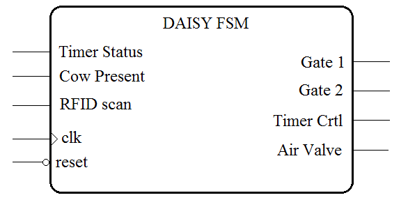
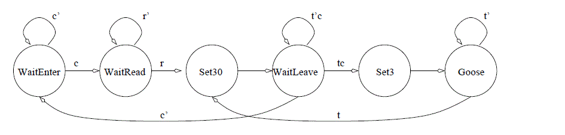
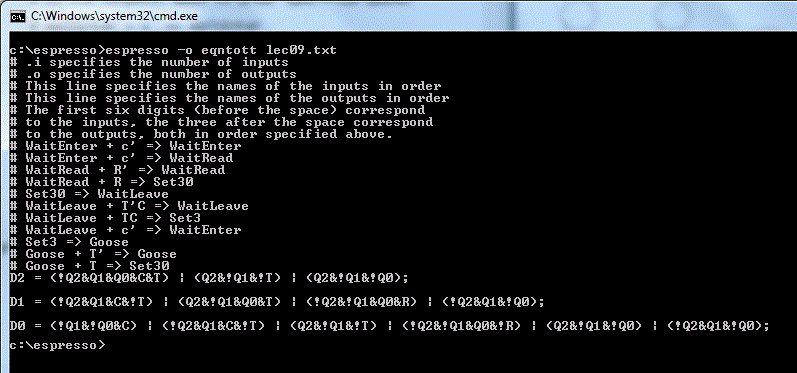
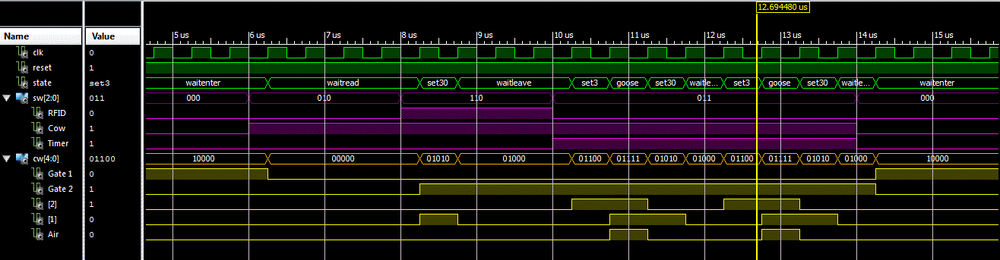

Lesson Notes for Lesson 9
example code for today's class
See lec09 folder in class github repo [class github repo](https://github.com/USAFA-ECE/ece383_wksp)also see hand09.docx
The D flip flop
Since D flip flops will be a major part of this lecture, it's worth spending a few minutes reviewing their operation. To start out, complete the following timing diagram for the output of the negative-edge triggered D flip-flop with an asynchronous active low reset line.
Setup time, denoted tsetup, is the amount of time before the rising edge of the clock in which the data inputs must be stable. Hold time, denoted thold, is the amount of time after the rising edge of the clock during which the data input must be stable. Finally, propagation delay, denoted tp, is the amount of time after the rising edge of the clock required for the new Q value to become valid. It is also known as tCQ, for “time clock to Q”, or tFF. These time values are illustrated in the image below. Note that LH is low to high and HL is high to low.

Finite State Machines
A Finite State Machine (FSM) is the most general form of a sequential circuit, or
a circuit whose output is a function of its input and its internal state.
The logic behind a FSM is illustrated in the figure below.

The signals X, Y, Q, and Z are all vectors consisting of zero or more bits.
The X signal is the input to the FSM from the system being controlled -
also referred to as the status bits of the system.
The Z signal is the output from the FSM into the system being controlled -
also referred to as the control bits to the system.
The combinational logic circuit generating Z are called the output equations
(OE).
The state of the FSM is carried on the Q lines. Each bit of Q is
the output of a D flip flop, as shown in the figure above.
Thus, if Q is six bits wide, then the FSM has
six D flip flops. The Y signals are called the memory inputs; they are the
data inputs to the D flip flops. The combinational logic circuit generating
the Y signals is called the memory input equations (MIEs), or “combo logic”. In order to
improve the readability of circuit diagrams, the clock signal
will normally not be shown.
Let’s take a moment to reinterpret the statement ”The output of a finite
state machine is a function of its input and its internal state”.
In the figure above, you can see that
Z = F(Q), and Q+ = G(Q,X).
While the output Z does not directly depend on the input X, it does depend on
the state Q, which in turn depends on the input X.
With respect to this figure, three questions must be answered:
- What are the MIEs?
- What are the OEs?
- How many D flip flops are required?
These questions are answered by first understanding how to convert a word statement into a state diagram. Before doing that, though, let’s go over timing some more.
FSM Timing
The events occurring in the FSM are referenced to the clock input of the D flip flops inside the FSM. The timing diagram below lists events (numbered in circles) with respect to the clock signal being applied to the figure above. The following list explains what happens at each of these points in time, using the circuit previously discussed.- Event 1
- Since flip flops sample their inputs on the positive edge of the clock, this point is the beginning of the timing analysis.
- Event 2
- The propagation delay of the flip flops means a small delay occurs between the clock edge and the flip flop output, Q, becoming valid. This is the called the propagation delay of the flip flop and is denoted TFF in the diagram below.
- Event 3
- In order to maximize the clocking frequency of the FSM, the new inputs X to the FSM should be applied at the same moment that the flip flop outputs become valid.
- Event 4
- According to figure above, changing Q and X causes the memory inputs to change (the Y signal above). The delay between the application of the new inputs to the MIE logic and Y becoming valid is the propagation delay of the combination logic, denoted Tcombo.
- Event 5 When the Y values are valid, a small delay occurs while the flip flops register their new inputs, denoted Tsu. After this setup time, the FSM is ready for another clock edge.

The DAISY system
Since you should have some familiarity with FSM’s from previous course work,
we will jump right into a moderately complex example that will serve as
an important stepping-stone to an important concept covered in Lectures
10-13. Your task in this example is to design a high-tech cow-tracking
system for a local dairy. The system is called the Dairy Automated
Information SYstem, or DAISY for short.
Word Statement
Cows have an RFID tag attached to their collars. When
the cow passes through the cattle chute on their way into the barn, a RFID
reader reads the unique ID stored on the RFID tag and logs the cow into
the barn. The RFID system outputs a single bit: a 1 means the system has
read an RFID tag and has successfully checked a cow back into the barn; a
0 means the RFID system is either still processing a tag or is not currently
reading a tag.
In order to ensure each cow is scanned, the flow of cows into the barn is controlled by two gates at either end of the chute. Each gate is controlled by a single bit. To lift a gate, this input must be held at logic 1; to lower a gate, the input must be held at a logic 0. The sequence of raising and lowering the gates in order to control the flow of cows is illustrated in the figure below.

- Step 1
- Gate1 is lifted, allowing cow A to enter the chute.
- Step 2
- The DAISY system has detected cow A is in the chute and closes gate1.
- Step 3
- The cow waits in the closed off chute until the RFID reader signals that it has read the tag and checked in cow A.
- Step 4
- Gate2 is raised allowing cow A to leave. If the cow takes more than 30 seconds to leave, then the cow is "goosed" by a three-second burst of compressed air. An air bust is repeated at 30-second intervals until the cow leaves the chute. At any time when the cow leaves the chute, Gate 2 is closed and the system transitions back to Step 1.
In order to make all this happen, the DAISY is provided with inputs and sends the outputs to mechanical actuators, as shown in the figure below.

Inputs to DAISY
The word statement infers the existence of three inputs. The RFID scanner sends the DAISY system a single bit which indicates if the cow has been processed. A second input tells the DAISY system if a cow is in the chute. The final system input comes from a timer used to inform the DAISY system when 3 or 30 seconds have expired. We will give each of these inputs a single letter abbreviation (shown in the table below) to simplify construction of the state diagram describing the FSM.
| RFID Scanner = r | Cow Present = c | Timer Status = t |
| 1 - Cow checked in | 1 - cow present | 1 - timer up |
| 0 - Cow not processed | 0 - no cow | 0 - timer running |
Outputs from DAISY
The word statement infers the existence of four separate outputs. The gates in the DAISY system are controlled by a single bit each. Assume a logic 1 must be continuously applied to a gate in order to keep it raised. In order to give DAISY an accurate sense of time, the system is provided with a single timer with two bits of input and one bit of output. To use this timer, set the timer to either 3 or 30 seconds for a single clock cycle. Then, the control input commanding the timer to count down is continuously applied. The output of the timer will equal 0 until the set time limit has expired at which times its output will stay at 1 until a new time interval is set. When the electronic valve controlling the compressed air is open, air rushes out, goosing the cow.| Gate1 | Gate2 | Timer Control | Air Valve |
| 1-gate up | 1-gate up | 00 Stop timer | 0 closed |
| 0-gate down | 0-gate down | 01 Set to 30 secs | 1 open |
| 10 Set to 3 secs | |||
| 11 Run timer |
State Diagram
The process of creating the state diagram for the DAISY system requires considering movement through the steps of the process required to get a single cow through the gated chute. Each step in this process then becomes a state or a set of states. Each state asserts some output to control the devices connected to the DAISY system. Below is one possible list; other arrangements are possible.- Open gate1
- Wait for cow to enter chute
- Close gate1
- Wait for RFID to read cow
- Open gate2
- Wait for cow to leave
- If 30 seconds has transpired, then "goose" cow; goto Step 6
- Else if the cow has left, then close gate2; goto Step 1
Note when drawing the state diagram, you want each state to represent a particular arrangement of the outputs (state). Each state will be put into a circle with its name in it. Our first step is to get the state diagram drawn, we will concern ourselves with the main actions that need to be performed, only after this will be focus on the specific outputs needed to accomplish them. The inputs are responsible for moving the FSM between these arrangements. Each input is provided with an abbreviation in order to make drawing the state diagram more manageable. When the the variable, equal to logic 1, causes a transition, it is written by itself on the arc. When the variable, equal to 0, causes a transition, it is written with a prime above it on the arc.

Memory Input equations
Remember from the first figure that the memory input equations are a function of both the current state and the input. The memory input equations depend on the state encoding - what binary code is assigned to each state. We will look at two dense and one's hot.Dense If you elect to use a dense encoding, you are trying to given each state a binary representation that minimizes the number of flip- flops. While on the surface this seems the most logical course, we will see that it in fact creates a number of difficulties. For the sake of an example, lets use the state encoding given in the table below.
| State | Code |
| WaitEnter | 000 |
| WaitRead | 001 |
| Set30 | 010 |
| WaitLeave | 011 |
| Set3 | 100 |
| Goose | 101 |
This table implies that we will have three flip flops and consequently,
3-bits for Q. Since there are 3-bits of inputs, we have a total of
6-bits of input into the MIE component. Thus, we will have to solve
three (one for each of the flip flop inputs) 6-input Boolean equations.
This is a massive pain so I decided to use an automated design tool,
espresso
to help me. Espresso is a 2-level logic minimization tool that takes
a truth table as input and produces a near optimal SOP description of the
output.
Input File to espresso
.i 6 # .i specifies the number of inputs .o 3 # .o specifies the number of outputs .ilb Q2 Q1 Q0 R C T # This line specifies the names of the inputs in order .ob D2 D1 D0 # This line specifies the names of the outputs in order # The first six digits (before the space) correspond # to the inputs, the three after the space correspond # to the outputs, both in order specified above. 000 -0- 000 # WaitEnter + c' => WaitEnter 000 -1- 001 # WaitEnter + c => WaitRead 001 0-- 001 # WaitRead + R' => WaitRead 001 1-- 010 # WaitRead + R => Set30 010 --- 011 # Set30 => WaitLeave 011 -10 011 # WaitLeave + T'C => WaitLeave 011 -11 100 # WaitLeave + TC => Set3 011 -0- 000 # WaitLeave + c' => WaitEnter 100 --- 101 # Set3 => Goose 101 --0 101 # Goose + T' => Goose 101 --1 010 # Goose + T => Set30 .e # Signifies the end of the file.
Output

This level of work to derrive the MIEs takes a lot of time and
any changes mean that we will have to redo all this work. Frankly,
this is just too much of a pain. Lets compare this against a different
encoding called one’s hot.
One’s Hot A one’s hot encoding requires an individual flip flop for each state. So in our case, we will have 6 flip flops. Each state is assigned a flip flop, which outputs 1 when the FSM is in that state. Thus the term “one’s hot” means that only one of the flip flops will be hot (output of logic 1) at a time. The table below is a one’s hot encoding for our state diagram.
| State | Code |
| WaitEnter | 000001 |
| WaitRead | 000010 |
| Set30 | 000100 |
| WaitLeave | 001000 |
| Set3 | 010000 |
| Goose | 100000 |
Using this state assignment, it is an entirely easy to determine the memory input equations. For each state, just ask yourself, how do I get into that state? The answer is that you need to start at a state and traverse an arc. For example, there are two ways to get into the WaitEnter state, through WaitEnter (and no cow) or WaitLeave (with a cow).
D_WaitEnter = Q_WaitEnter * c' + Q_WaitLeave * c' D_WaitRead = Q_WaitRead * r' + Q_WaitEnter * c D_Set30 = Q_WaitRead * r + Q_Goose * t D_WaitLeave = Q_Set30 + Q_WaitLeave * t' * c D_Set3 = Q_WaitLeave * t * c D_Goose = Q_Goose * t' + Q_Set3
Output Equations
The first step in generating the output equations is to build a control word table - a table listing, for each state, its output.| State | Gate1 | Gate2 | Timer | Control Air |
| 1-gate up | 1-gate up | 00 Stop timer | 0 - closed | |
| 0-gate down | 0-gate down | 01 Set to 30 secs | 1 - open | |
| 10 Set to 3 secs | ||||
| 11 Run timer | ||||
| WaitEnter | 1 | 0 | 00 | 0 |
| WaitRead | 0 | 0 | 00 | 0 |
| Set30 | 0 | 1 | 01 | 0 |
| WaitLeave | 0 | 1 | 11 | 0 |
| Set3 | 0 | 1 | 10 | 0 |
| Goose | 0 | 1 | 11 | 1 |
In order to generate a set of equations for these equations, we need to know the state coding because the OE depend on the Q’s. Lets use the one’s hot encoding. Then we need to go down each column in the control word table and determine for which states the output is equal to 1. Then just list those states as shown in the output equations below.
Z_Gate1 <= Q_WaitEnter; Z_Gate2 <= Q_Set30 + Q_WaitLeave + Q_Set3 + Q_Goose Z_Timer_1 <= Q_Set3 + Q_WaitLeave + Q_Goose Z_Timer_0 <= Q_Set30 + Q_WaitLeave + Q_Goose Z_Air = Q_Goose
VHDL Simulation
The results of the VHDL simulation performed in ISim can be seen below.
